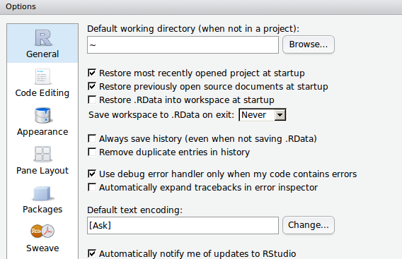

The R companion to this book is R Workflow which goes into much more detail and provides many examples of using R especially in the context of making a reproducible report. The material below provides an introduction to R Workflow.
1.1 Background
Computer code shown throughout these notes is RR Development Team (2025). R is free and is the most widely used statistical software in the world. It has the best graphics, statistical modeling, nonparametric methods, survival analysis, clinical trials methods, and data manipulation capabilities. R has the most comprehensive genomics analysis packages and has advanced capabilities for reproducible analysis and reporting. R also has an excellent graphical front-end RStudio (rstudio.org) that has the identical look and feel on all operating systems and via a web browser. Part of R’s appeal is the thousands of add-on packages available (at cran.r-project.org/web/packages), which exist because it is easy to add to R. Many of the add-on packages are specialty packages for biomedical research including packages for such widely diverse areas as
interfacing R to REDCap (2 packages)
interactive design of adaptive clinical trials
analyzing accelerometer data
flow cytometry
genomics
analyzing ICD9 codes and computing comorbidity indexes
Three of the best ways to learn how to analyze data in R quickly are
Avoid importing and manipulating data, instead using the RreadRDS function to load datasets that are already annotated and analysis-ready (see R Workflow for information about importing your own datasets)
Use example R scripts as analysis templates
Use RStudio (rstudio.org) to run R On the first approach, the RHmisc package’s getHdata function finds datasets in https://hbiostat.org/data, downloads them, and load()s them in your R session. These notes use only datasets available via this mechanism. These datasets are fully annotated with variable labels and units of measurements for many of the continuous variables. Concerning analysis scripts, some complete analysis script tamplates have been collected on github.com/harrelfe/rscripts and the RHmisc package has a function getRs to download these scripts and to automatically populate an RStudio script editor window with the script. Many of the scripts are in RMarkdown format for use with the Rknitr package to allow mixing of text and R code to make reproducible reports.
The RMarkdown scripts accessed through getRs use a template that makes the result part of a reproducible research process by documenting the versions of R and attached packages at the end of the report.
1.3 Setting up R
Before running examples in these notes and R markdown example scripts, you need to do the following:
Make sure your operating system is up to date enough to run the most current version of R at www.r-project.org. For Mac you must have OS X Maverick or later.
Install R from www.r-project.org or upgrade your installation of R to the latest version.
Install Quarto from quarto.org if you don’t want to use the version of Quarto that is provided automatically with RStudio
Install RStudio from rstudio.org or update your RStudio to the latest version.
Have RStudio install the Hmisc and rms packages (which will make RStudio install several other packages). For packages you had installed previously, make sure you update them to have the latest versions. <!–
Configure RStudioTools ... Global Options to match the images below

–>
Here are some examples of how getRs is used once you load the Hmisc package using a menu or by typing require(Hmisc) or library(Hmisc) in the console.
Code
require(Hmisc) # do this once per session (or library(Hmisc))options(url.method='libcurl') # sometimes needed if using WindowsgetRs() # list available scriptsgetRs(browse='browser') # open scripts contents in your web browserscripts <-getRs() # store directory of scripts in an object that can easily# be viewed on demand in RStudio (right upper pane)getRs('introda.r', put='rstudio') # download introda.r and open in script editorgetRs(cats=TRUE) # list available major and minor categoriescategories <-getRs(cats=TRUE) # store results in a list for later viewinggetRs(cats='reg') # list all scripts in a major category containing 'reg'getRs('importREDCap.r', put='source') # source() to define a function
To get started using R in RStudio to create reproducible annotated reports, finish the above configuration instructions and type the following in the RStudio console: getRs('descriptives.Rmd', put='rstudio'). The above the script editor window click on Render (if using Quarto) or Knit HTML.
Quarto has you put a yaml (“yet another markup language”) header at the start of the document. When you start a new Quarto document with RStudio, RStudio will create a simple header. A more detailed template is here.
The Rknitr package is automatically used to run the report and insert graphics and text output into the report at appropriate slots. It is best to specify a name for each chunk, and you must use unique names. Each R code chunk must begin exactly with ```{r …} and the chunk name is the first set of characters that appear after the space after r. Here are some example chunk headers. Chunk names must not contain a space.
The last line indicates that you wish knitr to create the chunk name using a counter.
After the chunk header there are many directives to Quarto to allow control of formatting and to create figure cross-referencing labels and captions. More dtails are here.
1.5 Debugging R Code
When using RStudio and knitr/Quarto/RMarkdown, it is best to debug your commands a piece at a time. The fastest way to do this is to go to some line inside your first chunk and click the green C just above and to the right of your script. Click on then on Run Next Chunk. Shortcut keys for these are Ctrl+Alt+C and Ctrl+Alt+N (Command+Option+C and Command+Option+N for Mac). You can also click on a single line of code and run it by clicking on Run.
Whenever you get a strange execution error it is sometimes helpful to show the history of all the function calls leading to that error. This is done by typing traceback() at the command prompt.
1.6 Importing Other Datasets
Most of the work of getting some data sources ready for analysis involves reshaping datasets from wide to tall and thin, recoding variables, and merging multiple datasets. R has first-class capabilities for all of these tasks but this part of R is harder to learn, partly because there are so many ways to accomplish these tasks in R. Getting good variable names, variable labels, and value labels, can also be tedious but is highly worth the time investment. See R Workflow for detailed information about importing various types of files, and recoding and manipulating data after importing them.
Sometimes the dataset to read into R is very small and can be defined within the report. Here is an example.
Code
# What is between data <- .. and ') is exactly like an external .csv filedata <-textConnection('Age in Years,sex,race,visit date,m/s23,m,w,10/21/2014,1.114,f,b,10/22/2014,1.3,f,w,10/15/2014,1.7')require(Hmisc)d <-csv.get(data, lowernames=TRUE, datevars='visit.date',dateformat='%m/%d/%Y')close(data) # close the textConnection# lowernames=TRUE: convert variable names to lower case# Omit dateformat if dates are in YYYY-MM-DD formatcontents(d)
d Contents
Data frame:d
3 observations and 5 variables, maximum # NAs:1
Name
Labels
Class
Storage
NAs
age.in.years
Age in Years
integer
integer
1
sex
sex
character
character
0
race
race
character
character
0
visit.date
visit date
Date
double
0
m.s
m/s
numeric
double
0
Code
d
age.in.years sex race visit.date m.s
1 23 m w 2014-10-21 1.1
2 14 f b 2014-10-22 1.3
3 NA f w 2014-10-15 1.7
In the contents output above you can see that the original column names have been placed in the variable labels, and the new names have periods in place of blanks or a slash, since these characters are illegal in R names.
You can have as the first argument to csv.get not only a file name but a URL to a file on the web. You can also specify delimiters other than commas.
The HmiscupData function may be used to rename variables and provide variable and value labels and units of measurement. Here is another example where there is a junk variable to delete after importing, and a categorical variable is coded as integers and need to have value labels defined after importing. We show how csv.get automatically renamed one illegal (to R) variable name, how to redefine a variable label, and how to define the value labels. Suppose that file test.csv exists in our project directory and has the following contents.
Value 23 37 42 45
Frequency 1 1 1 1
Proportion 0.25 0.25 0.25 0.25
sbp: Systolic Blood Pressure mmHg
n
missing
distinct
Info
Mean
pMedian
Gmd
4
0
4
1
134.8
134.8
8.5
Value 127 131 140 141
Frequency 1 1 1 1
Proportion 0.25 0.25 0.25 0.25
sex
n
missing
distinct
4
0
2
Value female male
Frequency 2 2
Proportion 0.5 0.5
state
n
missing
distinct
4
0
2
Value Alabama Alaska
Frequency 2 2
Proportion 0.5 0.5
Code
dim(d); nrow(d); ncol(d); length(d) # length is no. of variables
[1] 4 4
[1] 4
[1] 4
[1] 4
For tiny datasets it is easiest to define them as follows:
Code
d <-data.frame(age=c(10,20,30), sex=c('male','female','male'),sbp=c(120,125,NA))
Large files may be stored in R binary format using saveRDS(..., compress='xz'), which creates an incredibly compact representation of the data in a file usually suffixed with .rds. This allows extremely fast loading of the data frame in your next R session using readRDS(...).
1.7 Suggestions for Initial Data Look
The datadensity function in the Hmisc package gives an overall univariable graphical summary of all variables in the imported dataset. The contents and describe functions are handy for describing the variables, labels, number of NAs, extreme values, and other values. R Workflow has many other approaches for the initial data look.
1.8 Operating on Data Frames
One of the most common operations is subsetting. In the following example we subset on males older than 26.
Code
young.males <-subset(d, sex =='male'& age >26)# If you want to exclude rows that are missing on sex or age:young.males <-subset(d, sex =='male'& age >26&!is.na(sex) &!is.na(age))# f <- lrm(y ~ sex + age, data=subset(d, sex == 'male' & ...))# f <- lrm(y ~ sex + age, data=d, subset=sex == 'male' & age > 26 ...)
R Development Team. (2025). R: A language and environment for statistical computing. R Foundation for Statistical Computing; www.r-project.org. http://www.R-project.org
Source Code
# `R````{r setup, include=FALSE}require(Hmisc)options(prType='html')# source('~/r/rmarkdown/bookfun.r')```The `R` companion to this book is [R Workflow](https://hbiostat.org/rflow) which goes into much more detail and provides many examples of using `R` especially in the context of making a reproducible report. The material below provides an introduction to `R Workflow`.## BackgroundComputer code shown throughout these notes is `R` @R. `R` is freeand is themost widely used statistical software in the world. It has the best graphics,statistical modeling, nonparametric methods, survival analysis,clinical trials methods, and data manipulation capabilities. `R` hasthe most comprehensive genomics analysis packages and has advancedcapabilities for reproducible analysis and reporting. `R` also has anexcellent graphical front-end `RStudio` ([rstudio.org](https://www.rstudio.com/)) thathas the identical look and feel on all operating systems and via a webbrowser. Part of`R`'s appeal is the thousands of add-on packages available (at[cran.r-project.org/web/packages](http://cran.r-project.org/web/packages)), whichexist because it is easy to add to `R`. Many of the add-on packagesare specialty packages for biomedical research including packages forsuch widely diverse areas as* interfacing `R` to `REDCap` (2 packages)* interactive design of adaptive clinical trials* analyzing accelerometer data* flow cytometry* genomics* analyzing ICD9 codes and computing comorbidity indexes* downloading all annotated NHANES datasets* interfacing to [clinicaltrials.gov](https://clinicaltrials.gov/)* detecting whether a dataset contains personal identifiers of human subjects* analysis of early phase cardiovascular drug safety studiesThe main `R` web site is [www.r-project.org](https://www.r-project.org/).## Learning `R`Start with <em>R Tutorials</em> at [www.r-bloggers.com/how-to-learn-r-2](http://www.r-bloggers.com/how-to-learn-r-2), <em>R Programming Tutorials</em> from Mike Marin at[www.youtube.com/user/marinstatlectures](https://www.youtube.com/user/marinstatlectures), or <em>Fast Lane to Learning R</em> at [github.com//matloff/fasteR](https://github.com//matloff/fasteR) byNorm Matloff. Or look at[swirlstats.com](https://swirlstats.com) for an interactive way to learn `R`. Thosewho have used SPSS or SAS before will profit from <em>`R` for SAS and SPSS Users</em> by Robert Muenchen. A current list of `R` books on[amazon.com](https://www.amazon.com/) may be found at [amzn.to/15URiF6](http://amzn.to/15URiF6).[stats.idre.ucla.edu/r/](https://stats.idre.ucla.edu/r/) and[www.introductoryr.co.uk/R_Resources_for_Beginners.html](http://www.introductoryr.co.uk/R_Resources_for_Beginners.html)are useful web sites.An excellent resource is [`R` for Data Science](https://r4ds.had.co.nz/) by Grolemund and Wickham.See also <em>`R` in Action, second ed.</em> by RobertKabacoff. The online open source book on statistical modeling by Legler and Roback at[bookdown.org/roback/bookdown-bysh](https://bookdown.org/roback/bookdown-bysh) contains a lot of `R` code.Jenny Bryan's [STAT 545](https://stat545.com)<em>Data Wrangling, Exploration, and Analysis with `R`</em> course at[stat545.com](stat545.com) is an excellent resource.[stackoverflow.com/tags/r](http://stackoverflow.com/tags/r) is the best place for askingquestions about the language and for learning from answers to past questionsasked (see also the `R-help` email list).Three of the best ways to learn how to analyze data in `R` quickly are1. Avoid importing and manipulating data, instead using the `R``readRDS` function to load datasets that are already annotated and analysis-ready (see `R Workflow` for information about importing your own datasets)1. Use example `R` scripts as analysis templates1. Use `RStudio` ([rstudio.org](https://www.rstudio.com)) to run `R`On the first approach, the `R``Hmisc` package's `getHdata`function finds datasets in <https://hbiostat.org/data>, downloads them, and `load()`s them in your `R` session.These notes use only datasets available via this mechanism. Thesedatasets are fully annotated with variable labels and units ofmeasurements for many of the continuous variables.Concerning analysis scripts, some complete analysis script tamplates have been collectedon[github.com/harrelfe/rscripts](https://github.com/harrelfe/rscripts)\footnote{`github` has outstanding version control and issue reporting/tracking. It greatly facilitates the contribution of new scripts by users, which are most welcomed. Contact <tt>fh@fharrell.com</tt> if you have scripts to contribute or suggestions for existing scripts.} andthe `R``Hmisc` package has a function `getRs` to download thesescripts and to automatically populate an`RStudio` script editor window with the script.Many of the scripts are in RMarkdown format for use with the `R``knitr` package to allow mixing of text and `R` code to makereproducible reports.The RMarkdown scripts accessed through `getRs` use a template that makes theresult part ofa reproducible research process by documenting the versions of `R` andattached packages at the end of the report.## Setting up `R`Before running examples in these notes and `R` markdown examplescripts, you need to do the following:1. Make sure your operating system is up to date enough to run the most current version of `R` at [www.r-project.org](https://www.r-project.org/). For Mac you must have OS X Maverick or later.1. Install `R` from [www.r-project.org](https://www.r-project.org/) or upgrade your installation of `R` to the latest version.1. Install `Quarto` from [quarto.org](https://quarto.org/docs/get-started) if you don't want to use the version of `Quarto` that is provided automatically with `RStudio`1. Install `RStudio` from [rstudio.org](https://www.rstudio.com/) or update your`RStudio` to the latest version.<!-- 1. Run `RStudio` and get it to install the packages that allow `Rmarkdown` to run, by clicking on \co{File ... New File ... R Markdown}. Make sure that the `knitr` package is installed. -->1. Have `RStudio` install the `Hmisc` and `rms` packages (which will make `RStudio` install several other packages). For packages you had installed previously, make sure you update them to have the latest versions.<!--1. Configure `RStudio` `Tools ... Global Options` to match the images below<img src="images/rstudioOptions.png" width="50%"><img src="rstudioSweave.png" width="50%">-->Here are some examples of how `getRs` is used once youload the `Hmisc` package using a menu or by typing`require(Hmisc)` or `library(Hmisc)` in the console.```{r getRsex,eval=FALSE}require(Hmisc) # do this once per session (or library(Hmisc))options(url.method='libcurl') # sometimes needed if using WindowsgetRs() # list available scriptsgetRs(browse='browser') # open scripts contents in your web browserscripts <-getRs() # store directory of scripts in an object that can easily# be viewed on demand in RStudio (right upper pane)getRs('introda.r', put='rstudio') # download introda.r and open in script editorgetRs(cats=TRUE) # list available major and minor categoriescategories <-getRs(cats=TRUE) # store results in a list for later viewinggetRs(cats='reg') # list all scripts in a major category containing 'reg'getRs('importREDCap.r', put='source') # source() to define a function```You can also point your browser to[github.com/harrelfe/rscripts/blob/master/contents.md](https://github.com/harrelfe/rscripts/blob/master/contents.md) tosee the available scripts and categories, and to be able to click onlinks to see `html` report output.To get started using `R` in `RStudio` to create reproducibleannotated reports, finish the above configuration instructions andtype the following in the `RStudio` console:`getRs('descriptives.Rmd', put='rstudio')`. The above the script editor windowclick on `Render` (if using `Quarto`) or `Knit HTML`.## Quarto`Quarto` is a new way to build scientific reports and articles. It is a replacement for `R Markdown` but its syntax is largely compatible with `R Markdown`, so resources on learning `R Markdown` areSee [kbroman.org/knitr_knutshell/pages/Rmarkdown.html](http://kbroman.org/knitr_knutshell/pages/Rmarkdown.html) andprint the `R Markdown` cheat sheet from[www.rstudio.com/resources/cheatsheets](http://www.rstudio.com/resources/cheatsheets). For more advanced R Markdown usage see the excellent [video by Tom Mock](https://youtu.be/WkF7nqEYF1E).`Quarto` has you put a _yaml_ ("yet another markup language") header at the start of the document. When you start a new `Quarto` document with `RStudio`, `RStudio` will create a simple header. A more detailed template is [here](https://hbiostat.org/R/reportTemplate.qmd).The `R``knitr` package is automatically used to run the report andinsert graphics and text output into the report at appropriate slots.It is best to specify a name for each chunk, and you must use uniquenames. Each `R` code chunk must begin exactlywith <tt>```{r ...}</tt> and the chunk name is the first set ofcharacters that appear after the space after <tt>r</tt>. Here are someexample chunk headers. Chunk names must not contain a space.| ```{r descriptives}| ```{r anova}| ```{r anova-y1}| ```{r anova_y1}| ```{r acidity_plot}| ```{r plot_residuals}| ```{r}The last line indicates that you wish `knitr` to create the chunk name using a counter.After the chunk header there are many directives to `Quarto` to allow control of formatting and to create figure cross-referencing labels and captions. More dtails are [here](http://hbiostat.org/rflow/rformat.html).## Debugging `R` CodeWhen using `RStudio` and `knitr/Quarto/RMarkdown`, it isbest to debug your commands a piece at a time. The fastest way to dothis is to go to some line inside your first chunk and click the green`C` just above and to the right of your script. Click on \co{Run Current Chunk} then on `Run Next Chunk`. Shortcut keys for theseare `Ctrl+Alt+C` and `Ctrl+Alt+N` (`Command+Option+C` and `Command+Option+N` for Mac). You can also click on asingle line of code and run it by clicking on `Run`.Whenever you get a strange execution error it is sometimes helpful toshow the history of all the function calls leading to that error.This is done by typing `traceback()` at the command prompt.<!-- <a name="sec:r-import"></a> -->## Importing Other DatasetsMost of the work of getting some data sources ready for analysis involvesreshaping datasets from wide to tall and thin, recoding variables,and merging multiple datasets. `R` has first-class capabilities forall of these tasks but this part of `R` is harder to learn, partlybecause there are so many ways to accomplish these tasks in `R`.Getting good variable names, variable labels, and value labels, canalso be tedious but is highly worth the time investment. See `R Workflow` for detailed information about importing various types of files, and recoding and manipulating data after importing them.<!-- Read [biostat.app.vumc.org/DataTransmissionProcedures](http://biostat.app.vumc.org/DataTransmissionProcedures) for best practices for constructing spreadsheets so they can be reliably imported.-->Sometimes the dataset to read into `R` is very small and can be defined within the report. Here is an example.```{r impcsv}# What is between data <- .. and ') is exactly like an external .csv filedata <-textConnection('Age in Years,sex,race,visit date,m/s23,m,w,10/21/2014,1.114,f,b,10/22/2014,1.3,f,w,10/15/2014,1.7')require(Hmisc)d <-csv.get(data, lowernames=TRUE, datevars='visit.date',dateformat='%m/%d/%Y')close(data) # close the textConnection# lowernames=TRUE: convert variable names to lower case# Omit dateformat if dates are in YYYY-MM-DD formatcontents(d)d```In the `contents` output above you can see that the original columnnames have been placed in the variable labels, and the new names haveperiods in place of blanks or a slash, since these characters areillegal in `R` names.You can have as the first argument to `csv.get` not only a filename but a URL to a file on the web. You can also specify delimitersother than commas.Also see the excellent tutorial on importing from Excel found at [www.r-bloggers.com/r-tutorial-on-reading-and-importing-excel-files-into-r](http://www.r-bloggers.com/r-tutorial-on-reading-and-importing-excel-files-into-r).The `Hmisc``upData` function may be used to rename variablesand provide variable and value labels and units of measurement.Here is another example where there is a `junk` variable todelete after importing, and a categorical variable is coded asintegers and need to have value labels defined afterimporting. We show how `csv.get` automatically renamed one illegal(to `R`) variable name, how to redefine a variable label, and how todefine the value labels. Suppose that file `test.csv` exists inour project directory and has the following contents.<pre>age,sys bp,sex,junk,state23,140,male,1,142,131,female,2,145,127,female,3,237,141,male,4,2</pre>Now import and modify the file.```{r impcsv2}require(Hmisc)d <-csv.get('test.csv')names(d) # show names after modification by csv.getcontents(d) # show labels created by csv.getd <-upData(d,state=factor(state, 1:2, c('Alabama','Alaska')),rename=c(sys.bp='sbp'),labels=c(age ='Age',sbp ='Systolic Blood Pressure'),drop='junk', # for > 1: drop=c('junk1','junk2',...)units=c(sbp='mmHg'))contents(d)describe(d)dim(d); nrow(d); ncol(d); length(d) # length is no. of variables```For tiny datasets it is easiest to define them as follows:```{r eval=FALSE}d <-data.frame(age=c(10,20,30), sex=c('male','female','male'),sbp=c(120,125,NA))```Large files may be stored in `R` binary format using `saveRDS(..., compress='xz')`, which creates an incredibly compact representation of the data in a file usually suffixed with `.rds`. This allows extremely fast loading of the data frame in your next `R` session using `readRDS(...)`.## Suggestions for Initial Data LookThe `datadensity` function in the `Hmisc` package gives anoverall univariable graphical summary of all variables in the importeddataset. The `contents` and `describe` functions are handy fordescribing the variables, labels, number of `NA`s, extreme values,and other values. `R Workflow` has many other approaches for the initial data look.## Operating on Data FramesOne of the most common operations is subsetting. In the followingexample we subset on males older than 26.```{r subset,eval=FALSE}young.males <-subset(d, sex =='male'& age >26)# If you want to exclude rows that are missing on sex or age:young.males <-subset(d, sex =='male'& age >26&!is.na(sex) &!is.na(age))# f <- lrm(y ~ sex + age, data=subset(d, sex == 'male' & ...))# f <- lrm(y ~ sex + age, data=d, subset=sex == 'male' & age > 26 ...)```
 –>
–>
![image](data:image/png;base64,
iVBORw0KGgoAAAANSUhEUgAAAA0AAAANCAYAAABy6+R8AAAEDmlDQ1BrQ0dDb2xvclNwYWNlR2VuZXJpY1JHQgAAOI2NVV1oHFUUPpu5syskzoPUpqaSDv41lLRsUtGE2uj+ZbNt3CyTbLRBkMns3Z1pJjPj/KRpKT4UQRDBqOCT4P9bwSchaqvtiy2itFCiBIMo+ND6R6HSFwnruTOzu5O4a73L3PnmnO9+595z7t4LkLgsW5beJQIsGq4t5dPis8fmxMQ6dMF90A190C0rjpUqlSYBG+PCv9rt7yDG3tf2t/f/Z+uuUEcBiN2F2Kw4yiLiZQD+FcWyXYAEQfvICddi+AnEO2ycIOISw7UAVxieD/Cyz5mRMohfRSwoqoz+xNuIB+cj9loEB3Pw2448NaitKSLLRck2q5pOI9O9g/t/tkXda8Tbg0+PszB9FN8DuPaXKnKW4YcQn1Xk3HSIry5ps8UQ/2W5aQnxIwBdu7yFcgrxPsRjVXu8HOh0qao30cArp9SZZxDfg3h1wTzKxu5E/LUxX5wKdX5SnAzmDx4A4OIqLbB69yMesE1pKojLjVdoNsfyiPi45hZmAn3uLWdpOtfQOaVmikEs7ovj8hFWpz7EV6mel0L9Xy23FMYlPYZenAx0yDB1/PX6dledmQjikjkXCxqMJS9WtfFCyH9XtSekEF+2dH+P4tzITduTygGfv58a5VCTH5PtXD7EFZiNyUDBhHnsFTBgE0SQIA9pfFtgo6cKGuhooeilaKH41eDs38Ip+f4At1Rq/sjr6NEwQqb/I/DQqsLvaFUjvAx+eWirddAJZnAj1DFJL0mSg/gcIpPkMBkhoyCSJ8lTZIxk0TpKDjXHliJzZPO50dR5ASNSnzeLvIvod0HG/mdkmOC0z8VKnzcQ2M/Yz2vKldduXjp9bleLu0ZWn7vWc+l0JGcaai10yNrUnXLP/8Jf59ewX+c3Wgz+B34Df+vbVrc16zTMVgp9um9bxEfzPU5kPqUtVWxhs6OiWTVW+gIfywB9uXi7CGcGW/zk98k/kmvJ95IfJn/j3uQ+4c5zn3Kfcd+AyF3gLnJfcl9xH3OfR2rUee80a+6vo7EK5mmXUdyfQlrYLTwoZIU9wsPCZEtP6BWGhAlhL3p2N6sTjRdduwbHsG9kq32sgBepc+xurLPW4T9URpYGJ3ym4+8zA05u44QjST8ZIoVtu3qE7fWmdn5LPdqvgcZz8Ww8BWJ8X3w0PhQ/wnCDGd+LvlHs8dRy6bLLDuKMaZ20tZrqisPJ5ONiCq8yKhYM5cCgKOu66Lsc0aYOtZdo5QCwezI4wm9J/v0X23mlZXOfBjj8Jzv3WrY5D+CsA9D7aMs2gGfjve8ArD6mePZSeCfEYt8CONWDw8FXTxrPqx/r9Vt4biXeANh8vV7/+/16ffMD1N8AuKD/A/8leAvFY9bLAAAAOGVYSWZNTQAqAAAACAABh2kABAAAAAEAAAAaAAAAAAACoAIABAAAAAEAAAANoAMABAAAAAEAAAANAAAAAIoCOpQAAACmSURBVCgVzVJBCoQwDBzaxYtSCkX0EQVv9kP9cKF9g4pXvSia3Ra2sLiX3ZOBhCHJQGYIAFAIgYZhuKS1loQQqW+Mob7vKe4/XgVN00ApFeFHlGUJxhjatkVRFHnGMvoB3JyUjPDeQ0p5UTXPM47jgHMOy7LkeSJprb+6V9c1OOfoug5VVWXSzY3467xkxDRN2Pc9C32DdV1xnifGccS2bSCKrwc8Ab+6Rv4NVUeIAAAAAElFTkSuQmCC)
![image](data:image/png;base64,
iVBORw0KGgoAAAANSUhEUgAAAA0AAAANCAYAAABy6+R8AAAEDmlDQ1BrQ0dDb2xvclNwYWNlR2VuZXJpY1JHQgAAOI2NVV1oHFUUPpu5syskzoPUpqaSDv41lLRsUtGE2uj+ZbNt3CyTbLRBkMns3Z1pJjPj/KRpKT4UQRDBqOCT4P9bwSchaqvtiy2itFCiBIMo+ND6R6HSFwnruTOzu5O4a73L3PnmnO9+595z7t4LkLgsW5beJQIsGq4t5dPis8fmxMQ6dMF90A190C0rjpUqlSYBG+PCv9rt7yDG3tf2t/f/Z+uuUEcBiN2F2Kw4yiLiZQD+FcWyXYAEQfvICddi+AnEO2ycIOISw7UAVxieD/Cyz5mRMohfRSwoqoz+xNuIB+cj9loEB3Pw2448NaitKSLLRck2q5pOI9O9g/t/tkXda8Tbg0+PszB9FN8DuPaXKnKW4YcQn1Xk3HSIry5ps8UQ/2W5aQnxIwBdu7yFcgrxPsRjVXu8HOh0qao30cArp9SZZxDfg3h1wTzKxu5E/LUxX5wKdX5SnAzmDx4A4OIqLbB69yMesE1pKojLjVdoNsfyiPi45hZmAn3uLWdpOtfQOaVmikEs7ovj8hFWpz7EV6mel0L9Xy23FMYlPYZenAx0yDB1/PX6dledmQjikjkXCxqMJS9WtfFCyH9XtSekEF+2dH+P4tzITduTygGfv58a5VCTH5PtXD7EFZiNyUDBhHnsFTBgE0SQIA9pfFtgo6cKGuhooeilaKH41eDs38Ip+f4At1Rq/sjr6NEwQqb/I/DQqsLvaFUjvAx+eWirddAJZnAj1DFJL0mSg/gcIpPkMBkhoyCSJ8lTZIxk0TpKDjXHliJzZPO50dR5ASNSnzeLvIvod0HG/mdkmOC0z8VKnzcQ2M/Yz2vKldduXjp9bleLu0ZWn7vWc+l0JGcaai10yNrUnXLP/8Jf59ewX+c3Wgz+B34Df+vbVrc16zTMVgp9um9bxEfzPU5kPqUtVWxhs6OiWTVW+gIfywB9uXi7CGcGW/zk98k/kmvJ95IfJn/j3uQ+4c5zn3Kfcd+AyF3gLnJfcl9xH3OfR2rUee80a+6vo7EK5mmXUdyfQlrYLTwoZIU9wsPCZEtP6BWGhAlhL3p2N6sTjRdduwbHsG9kq32sgBepc+xurLPW4T9URpYGJ3ym4+8zA05u44QjST8ZIoVtu3qE7fWmdn5LPdqvgcZz8Ww8BWJ8X3w0PhQ/wnCDGd+LvlHs8dRy6bLLDuKMaZ20tZrqisPJ5ONiCq8yKhYM5cCgKOu66Lsc0aYOtZdo5QCwezI4wm9J/v0X23mlZXOfBjj8Jzv3WrY5D+CsA9D7aMs2gGfjve8ArD6mePZSeCfEYt8CONWDw8FXTxrPqx/r9Vt4biXeANh8vV7/+/16ffMD1N8AuKD/A/8leAvFY9bLAAAAOGVYSWZNTQAqAAAACAABh2kABAAAAAEAAAAaAAAAAAACoAIABAAAAAEAAAANoAMABAAAAAEAAAANAAAAAIoCOpQAAACcSURBVCgVzZAxDoQgEEX/wtJYES2wpTeBQ3A8L0eid4CC1pgY2JWxlG228heQPPjJzHsB+Kzrir7vYa2Fcw7zPJ/4Hq019n3Huz4ppTAMAzjn6LoO4zjeGydhjBG/zuaX3/DhJRKxLAuklDiOAykleO+bC+WciVNpmiayJ4Sg2xjTLFW7NQ8X8dd4JCLGSOaqnW3bEEJoiiilEP8CdK8rtF69vLMAAAAASUVORK5CYII=)